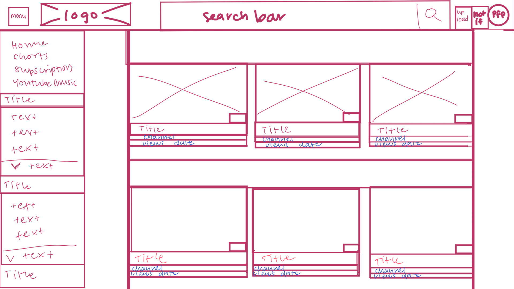
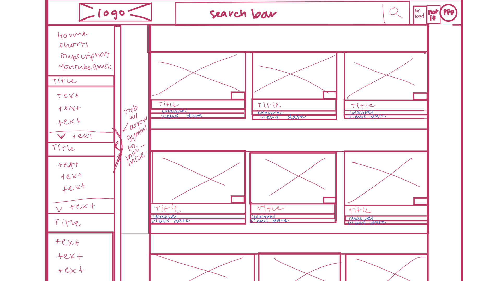

-
Using the favorite website you chose in homework 1, create a wireframe for one page of it using pen/paper, PowerPoint, or any your tool of choice. (use the 'img' tag!) Make sure to let us know what the name of your website is (Use the 'p' tag!)
Website = youtube.com
Click here  -
Try to improve the website you've chosen, and create a redesigned wireframe of one page for the same website using the principles of visual hierarchy that you learned from the article.
Improved wireframe for youtube.com

-
What is the goal of the website? Who is it intended for? How does the design accomplish this? Write 2-3 sentences answering these questions. (Use the 'p' tag again!)
The goal of the website is to showcase entertaining videos for the user to watch. The design focuses its space primarily on the thumbnails of these videos. By making most of the space for videos, with images representing the what the video might be like, gives the user an easy to understand spacing. This spacing being primarily for the showcase of videos lets the user immediately look for a video to watch instead of being distracted by other design elements.
-
Write 2-3 sentences about what problems your redesign addressed, and how it solved them.
The original deisgn had the entire interface span the whole screen, which made it hard to read, so in the redesign I increased the margins on the side to squeeze the inforamation more to the users direct line of sight instead of it getting lost in the peripheral vision. I also changed the menu minimize to be a small arrow on the right edge of the side menu bar (before it was near the logo and its purpose was not clear). This was to help with symmetry and associate the symbol with minimizing the bar, alone with letting it be attached to the bar for easier understanding of its purpose.
NOTE: Make sure to include the wireframe images in the website and don't just put it in your assets folder!
Your wireframes should look something like this: